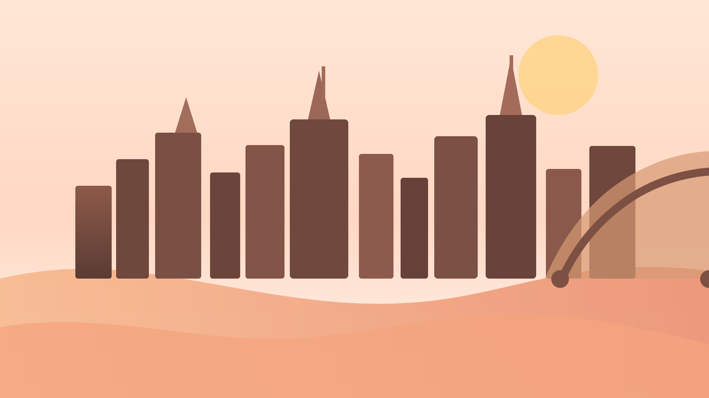
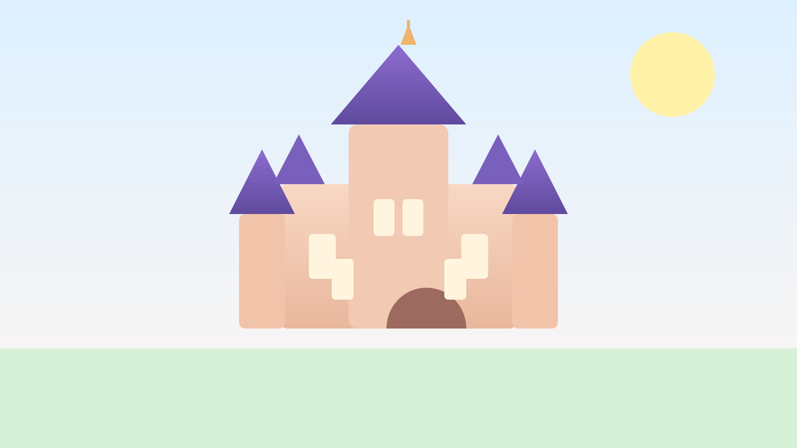
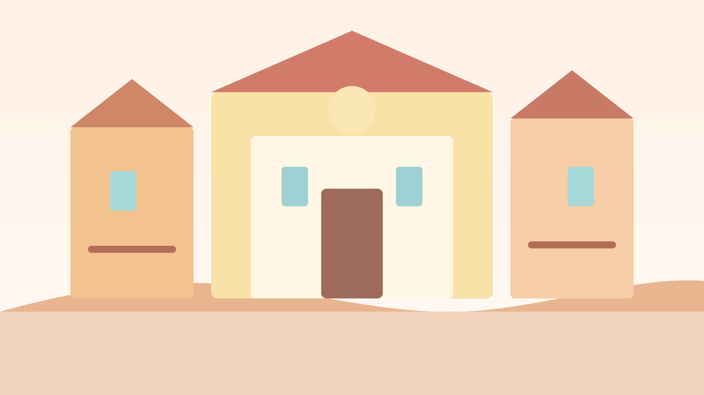

这版进一步从“可执行”往“真正好用”推进：除了主行程，还补了 预算框架、晴雨替代、路线嵌入式餐饮建议、节奏说明。 目标不是把时间塞满，而是让你们每一天都走得顺、拍得好、买得准、吃得舒服。

这是最关键的一条。把澳门放在中间日，最后一天留香港本地，能显著降低误机、赶路、情绪消耗。
你们不是刷项目团，而是情侣出游。港迪的价值在于拍照、氛围、仪式感，半天会严重打折。
海港城、广东道、K11 放在最后半天最可控，买完直接回酒店取行李去机场，效率最高。
关键词：别折腾、先落地、先进入香港。
这天不追求“打卡完成度”，只追求第一晚有氛围，拍到第一组夜景照就够了。
关键词：早出早回、经典葡式街景、情侣出片。
澳门最忌讳贪多。历史城区 + 官也街 / 龙环葡韵就已经足够饱满。
关键词：拍照优先、经典项目优先、尽量留到晚。
这一天尽量不要早退。港迪的值回票价部分，很大一部分来自傍晚的氛围、灯光和夜间演出。
关键词：咖啡、城市漫游、买包、从容去机场。
这里最适合把你想要的咖啡、三明治、面包和城市感照片一并完成。
茶餐厅、烧味、云吞面三选一，不用为了所谓“最红”去大绕路。
买包放最后是最聪明的：时间可控，买完就收尾，不会拎着战利品折返奔波。
尖沙咀地段强，设计感在线，情侣住体验很好，是“整体质感”最均衡的一档。
如果你想要一个稳定、不容易踩雷、出行效率高的选择，它很合适。
中等预算里最适合情侣短住的两类思路：一个更简洁、一个更生活方式。

第一晚不要再跑太远。酒店附近找一间看起来干净、营业正常的茶餐厅/粥粉面店，比为了某家名店折返更聪明。
上午逛完半岛历史城区后补葡挞或猪扒包，中午再决定是否坐下来吃葡国菜。这样体力分配最好。
建议：上环/中环先咖啡+面包/三明治，午餐再补一顿港餐。这样既满足你要的“特色店”，也不会一上来吃得太重。
这三块组合起来，已经足够覆盖你大部分可能想看的品牌。建议提前写好：品牌、目标款、颜色、可接受替代款。

把澳门交通、港迪门票、目标购物清单提前确定，能省掉大量现场犹豫成本。
浅色、低饱和、轻法式或简洁风最稳。港迪一定以舒服好走为前提。
真正高质量的旅行不是多跑，而是每段都不狼狈。你们这次最该追求的是“顺着玩”。